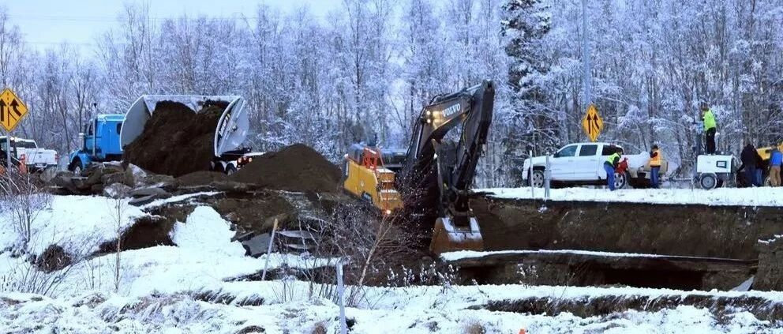

严格的建筑规范助力安克雷奇抵御地震
严格的建筑规范助力安克雷奇抵御地震
ANCHORAGE DAILY NEWS
安克雷奇日报
原文发布于
https://www.adn.com/alaska-news/2018/12/01/experts-alaska-quake-damage-could-have-been-much-worse/
作者 Rachel D'Oro，Mark Thiessen，美联社
赵鹏举 译
译者注：文中时间均为安克雷奇当地时间

2018年11月30日星期五在阿拉斯加州安克雷奇发生地震后，在一家名叫Value Liquor的酒类商店中，Aisoli Lealasola准备清理冰箱里散落的啤酒。店主Mary Funner说，地震后，啤酒，葡萄酒和其他瓶装酒类散落在商店的过道上。她考虑在星期五歇业，直到顾客重新开始排队。顾客被允许以小组的形式进入店铺。“我们仍在营业，但我们一次只开一点点，”她说。（美联社照片/Dan Joling）
阿拉斯加最大的城市发生7.0级地震，导致道路开裂，高速公路坡道坍塌，但没有大面积灾难性破坏或建筑物倒塌的报道。
这是有充分的理由的！
1964年阿拉斯加发生了毁灭性的大地震，这是美国有地震记录以来所发生的最大的地震，这也促成了更加严格的建筑规范，来帮助结构抵抗周五的这次地震。
“幸好阿拉斯加人民为这次地震做了充足的准备，”美国地质调查局地球物理学家Paul Caruso星期六说。“因为在像这样的城市中发生7.0级地震，你知道的，情况可能会很更糟糕。”
一位地震专家表示，阿拉斯加州和加利福尼亚州采用最严格的标准来帮助建筑物抵御地震。

在2018年11月30日星期五发生地震后，Al和Lyn Matthews展示他们在阿拉斯加州安克雷奇南部的家中出现的结构裂缝。（美联社照片/Michael Dinneen）
阿拉斯加地震危害安全委员会成员Sterling Strait表示，这些州使用国际建筑规范(International Building Code)，该规范被认为是目前地震安全的最佳标准。
它要求建筑物被设计的能够抵抗由场地和地震历史决定的可能的地震动。
阿拉斯加管道服务公司(Alyeska Pipeline Service Co.)的地震项目协调员Strait说，该规范还要求加固梁和柱等结构连接，以抵御地震造成的破坏。阿拉斯加管道服务公司运营着800英里(1,287公里)长的阿拉斯加输油管道。
州长Bill Walker说，有时候人们，包括他自己，对严格的建筑规范怨声载道。但他“真的很高兴”，因为他的房子只有轻微的水损坏。
“建筑规范有存在的意义”，他说。

2018年11月30日星期五在阿拉斯加州安克雷奇发生地震后，在一家名叫Value Liquor的酒类商店中，Adriel Matavo（左边）和Aisoli Lealasola正在清理一个步入式冰箱中散落的啤酒。店主Mary Funner说，地震后，啤酒，葡萄酒和其他瓶装酒类散落在商店的过道上。她考虑在星期五歇业，直到顾客重新开始排队。顾客被允许以小组的形式进入店铺。“我们仍在营业，但我们一次只开一点点，”她说。（美联社照片/Dan Joling）
地震发生在安克雷奇以北大约7英里(12公里)处，安克雷奇大约有30万人口。人们从他们所在的办公室里跑出来，或者躲在桌子底下。几分钟后发生了一次5.7级余震。接着发生了一系列较小的地震。
这两场接连发生的大地震将物品从货架上甩掉，使电力中断，商店橱窗破坏，并短暂地引发了该市南部岛屿和沿海地区海啸预警。Walker发表了一份灾难声明，特朗普总统宣布进入紧急状态，允许联邦应急管理局（Federal Emergency Management Agency）协调救灾工作。
这次地震没有关于人员死亡或重伤的报告。
在周五，输油管道关闭了几个小时，工作人员被派去检查是否有损坏。阿拉斯加管道服务公司发言人Michelle Egan说，输油管道已于周五下午3:30重新启动。
她周六表示，管道没有明显的损坏迹象，也没有对管道产生操作影响。管道距震中最近的距离为120英里（193公里）。

2018年11月30日，周五，在阿拉斯加安克雷奇，一辆自卸卡车和挖掘机正在临时修复一个在地震后坍塌的斜坡。当斜坡下沉时，一名试图从国际机场路的明尼苏达大道出口的司机没有受伤。这两场7.0级和5.7级的强震撕裂了高速公路，破坏了建筑物，使安克雷奇附近的人们感到不安。(美联社照片/Dan Joling)
星期六的余震继续刺激人们的神经，人们担心会陷入更大规模的震动之中。
“余震令人不安，在它们平静下来之前，我不会去收拾任何可能掉下来的东西，” 安克雷奇的一名律师Randall Cavanaugh在家中度过了一个不眠之夜后说，“我一直醒着。”
Caruso说，截至上午10时左右，共发生了约550次余震，其中11次在4.5级以上。
他说，在未来的几天里，余震应该会变弱，且不那么频繁，但官方也不能确定余震何时停止。
安克雷奇市长Ethan Berkowitz说，考虑到星期五地震的规模，地震造成的损失“相对较小”。他还将最小化结构破坏归功于建筑规范。
他在一场新闻发布会上说“就一场灾难而言，我认为它更多地说明了我们是谁，而不是我们遭受了什么。”他还说，安克雷奇已经为这样的紧急情况做好了准备。

Janet Younger的厨房在2018年11月30日的7.0级地震中遭受了巨大的破坏。（摄影：Janet Younger）
“人们齐心协力。我们遵循着制定好的计划。我们互相照顾。当全国各地和世界各地的人们看到这一情况时，他们会说，‘我们想用安克雷奇的方式应对震害，因为安克雷奇的做法是正确的，”市长Berkowitz说。
第一次地震发生后，阿拉斯加最大的医院启动了事故指挥中心，但在安克雷奇的普罗维登斯阿拉斯加医疗中心(Providence Alaska Medical center)，进入急诊室的病人并不多，就像正常工作日一样。
医院发言人Mikal Canfield说:“当时并没有出现人群拥挤的情况。”
道路遭到了破坏。阿拉斯加运输部统计了大约50处受损地点，其中8处被认为是主要受损地点。大部分的破坏都发生在安克雷奇北部的高速公路上。该机构还计划检查桥梁。
交通部门官员在一份新闻稿中说，余震还在继续造成建筑物的沉降和更多的裂缝。余震加剧了岩石坠落，给安克雷奇以南的苏厄德高速公路造成了一些问题。
地震破坏也阻碍了在安克雷奇和费尔班克斯之间的阿拉斯加铁路列车。该列车单程350英里(563公里)。
安克雷奇南部的列车定于周日恢复运行。
美国运输部发言人Meadow Bailey对美联社表示，在周五航班停飞后，Ted Stevens Anchorage国际机场现已恢复了正常运营。
安克雷奇的学校系统在周二停课，同时检查建筑物是否受损。
阿拉斯加1964年发生9.2级地震，震中位于安克雷奇以东约75英里(120公里)处。该地震与其引发的海啸夺去了大约130条生命。
阿拉斯加州平均每年发生4万次地震，比其他49个州加起来还要多。
对本报告作出贡献的有：
美联社作家Becky Bohrer，阿拉斯加州朱诺市；
Dan Joling，安克雷奇；
Gillian Flaccus，俄勒冈州波特兰市；
Gene Johnson，西雅图；
Jennifer Kelleher，Audrey McAvoy和Caleb Jones，檀香山；
Rachel La Corte华盛顿奥林匹亚；
John Antczak，洛杉矶。
译者注：本次阿拉斯加地震在安克雷奇市记录到的地面运动强度高于我国设计规范8度罕遇地震（约为北京2500年一遇地震），更是远远高于我国设计规范7度罕遇（约为上海2500年一遇地震）。但是基本没有超出安克雷奇市设计规范最大考虑地震的强度。安克雷奇的案例证明，”大震之后无大灾”是能做到的，老老实实搞好建筑和工程的抗震设防是实现”大震之后无大灾”的必备条件。


赵鹏举
相关研究
长按识别二维码，关注我们的科研动态